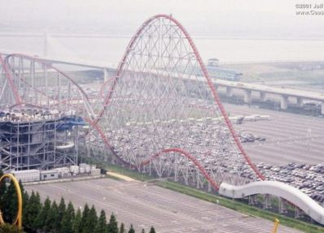
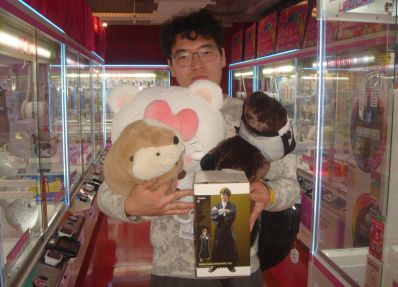
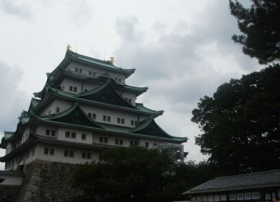

Places I Visited
-

Nagashima Spa Land
The first location we came upon was the Nagashima Spa Land. It was a huge amusement park with billions of choices of roller coasters and more. The place also had an onsen next to the park, which explains the name of the place.
In this park, my friends and I had a thrill. It was a great way to spend the morning and afternoon.
-

Playing Grab Game in Taito
Evening, after the park, we spend time at the heart of Nagoya City, Sakae
My friend in the picture won all of these prizes for us. He must be an expert at the way he kept winning.
-

Nagoya Castle
The morning after the night at Sakae, we spent the morning at the historical landmark, Nagoya Castle.
The castle had lots to offer, including the Museums of the Shogun and his Soldiers, Souvenir Shops, Garden. They also had a Ninja performance at the front of the landmark.